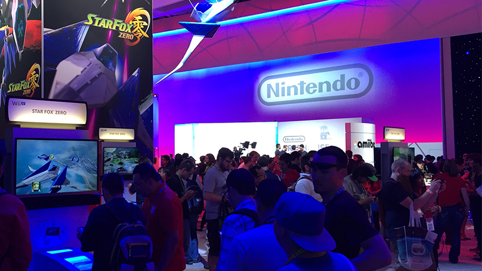

「Nintendo Treehouse: Live @ E3 2015」1日目
2015.6.17 9:00

「Nintendo Digital Event」放送後、LACCの任天堂ブース内からE3の出展タイトルを紹介するゲーム情報番組「Nintendo Treehouse: Live @ E3 2015」が放映されました。
ゲーム情報番組「Nintendo Treehouse: Live @ E3 2015」で『スターフォックス ゼロ』が紹介されました。生放送の場に宮本が登壇し、新しくなった『スターフォックス』を紹介しました。
TV画面とWii U GamePadとの2つの視点を使った特徴的な操作や、迫力のある
「オールレンジモード」などついて、実際にゲームをプレイしながら紹介されました。
宮本からは、本作のプラチナゲームズとの共同開発についてのことや、ゲームでしか体験出来ない臨場感のある新しいオーディオ・サウンドシステムに関することが語られました。
第二部では、プラチナゲームズ 橋本さんも参加。新機体「ジャイロウイング」や、本作で同時に3つのロックオンが可能になった「ランドマスター」を駆使して、ソフトの魅力を伝えました。
『スーパーマリオメーカー』紹介コーナーでは、宮本と手塚が登壇し、コースづくりやプレイの実演が行われました。
まずは手塚が実際にコースをメイク。『スーパーマリオブラザーズ』から、『New スーパーマリオブラザーズ U』に切り替えると、それだけでガラっと印象が変わります。さらに、ステージを「水中」に変えることで、元のコースが少しのアレンジで全く別のコースに様変わりしました。
こんどは、「任天堂ワールド・チャンピオンシップ」で超高難易度のコースをつくったMorganが実際にコースをアレンジし、宮本が挑戦。苦戦していたところで、手塚が「SUPER MARIO BROS. 30thシリーズ」のamiiboを取り出しました。タッチすると、でかキノコが出現。取ってみると、でかマリオに変身しました。
コースづくりとプレイを通して、つくる側とあそぶ側、両方の楽しさを伝えました。
『ゼルダの伝説 トライフォース３銃士』のコーナーでは、Treehouseのメンバーがソフトを実際にプレイして紹介しました。 3人のリンクを3人で操作するマルチプレイで、ステージを冒険していきます。 それぞれ好きな服を選んでスタート。分担して敵を倒したり、ほかのプレイヤーを持ちあげて高いところの仕掛けをといたり、声をかけあいながら高低差のある ステージを進みます。
それぞれ別のアイテムを持つこともあり、3人の息のあったプレイが必要となります。オンラインプレイのときにも役立つ、下画面アイコンの意思表示ボタンもそれぞれのシーンで使われていました。また、1人プレイのときは、3人のリンクを切り替えて進む方法も説明されました。
放送では、3種類のステージを3人で協力して進め、冒険で乗り越えていくさまざまなしかけやリンクたちのアクションについて紹介されていました。
「Nintendo Treehouse: Live @ E3 2015」では、このほかにも『METROID PRIME: FEDERATION FORCE』など、E3出展タイトルの実況プレイや、開発者インタビューが行われていました。
E3会期中に、Los Angeles Convention Center（LACC）の任天堂ブースから、任天堂のE3出展タイトルの情報を生中継でお届けする番組です。
米国販売子会社であるNOAでゲームの評価やローカライズ（現地向けの翻訳や改変）を担当するTreehouseのメンバーが、実況プレイをしたり、開発者にインタビューして、ゲームの情報をお伝えします。